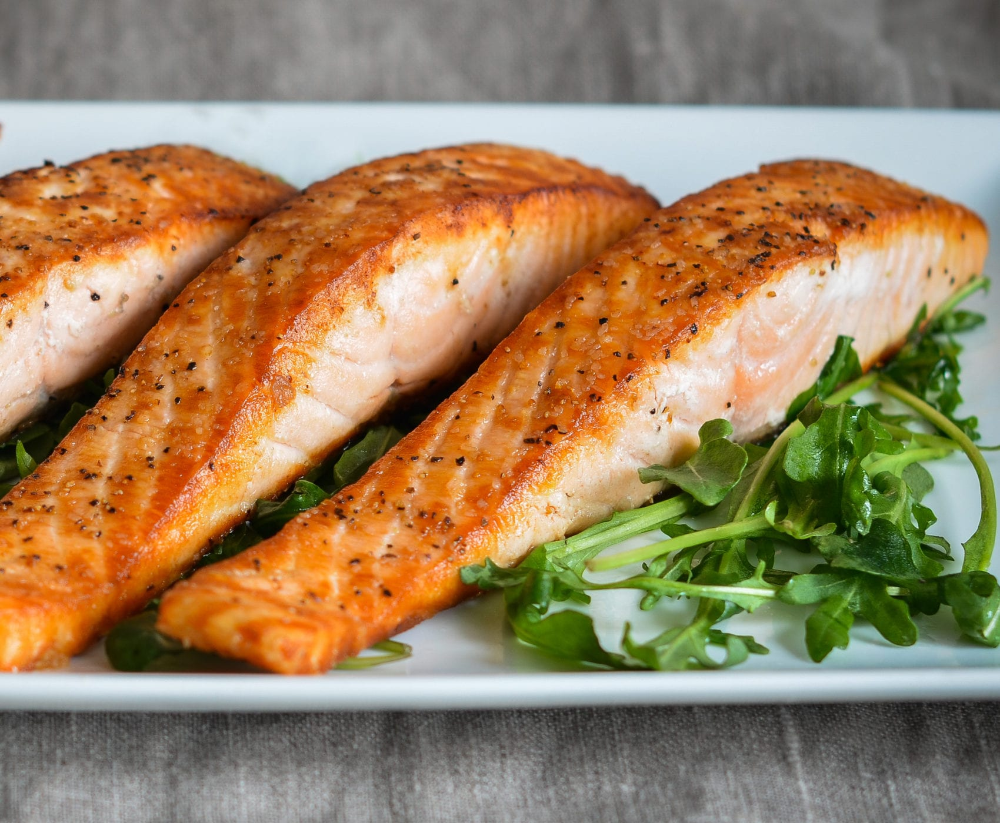

Restaurant-Style Pan Seared Salmon

Description
This pan-seared salmon recipe is both fast and elegant, taking only 15 minutes from start to finish. Gold and crispy on top and barely cooked in the center, this salmon is a great restaurant-style meal.
Ingredients
- 1 tbsp extra virgin olive oil
- 1/2 teaspoon kosher salt
- Freshly ground black pepper, to taste
- 4 salmon fillets, about 1 1/4 in thick
Steps
- Season the salmon with salt and pepper.
- Heat the oil in a skillet over medium-high heat until hot and shimmering.
- Cook the salmon without moving, skin side up, until gold and crisp, about 4 minutes.
- Carefully flip the fillets and reduce heat to medium. Continue cooking until done to your liking, about 4 to 5 minutes.
- Transfer to a platter and serve.